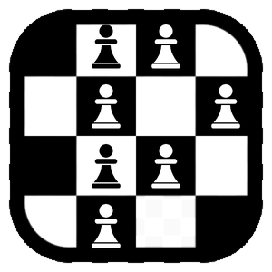
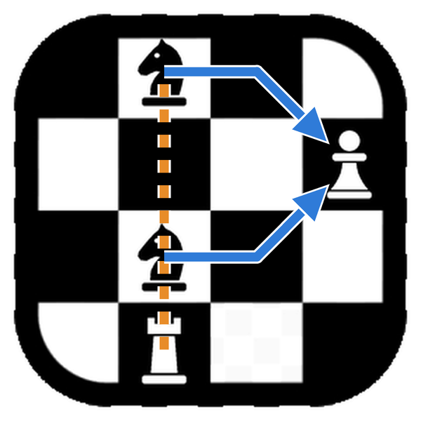

Pragma Chess has an official logo. At first sight it is a corner of a chessboard, sixteen squares with four pieces: two knights, a pawn and a rook. Look at it with a chess player's eyes, though, and it is a letter: the P of Pragma. It is drawn nowhere, and this article tells where it is and how we got there.
The logo of Pragma Chess has always been a board: four squares by four, white and black, inside a rounded frame. It is the icon you see in the taskbar and on the desktop, and it works because it is simple: it is recognised even at sixteen pixels, when little more than a blot is left of any drawing.
The first idea was to write the P of Pragma with pieces. Seven pawns on the squares: the stem in one file and the bowl in the three ranks at the top. Each pawn is the negative of its square, white on the dark ones and black on the light ones.

Up close it worked; small, it did not. At thirty-two pixels a pawn is a dot, and the P is lost in a noisy board. We settled on two versions: the plain one, the clean board, stays the program's icon at every size; the rich one appears where there is room to read it, in the welcome window and on this site.
That attempt also left a rule: the grid commands. Every piece stands at the centre of its whole square, even where the frame covers part of it. Where a piece reaches into the black frame, it turns into its negative and becomes white. Look at the base of the rook: it is the first surprise, and hardly anyone notices it.
Then came the right question: what if the P were not drawn, but described? The seven pawns gave way to four pieces, and the letter became the path of their moves.

The corner of the board is the top one, from the b-file to the e-file. The colours of the squares say so: the square at the top left, b8, is dark, as on a real board. The knights stand on c8 and c6, the pawn on e7 and the rook on c5.
The bowl. Both knights can take the pawn on e7. The knight's leap used to be described just so: one step like a rook and one like a bishop. The knight on c8 takes a rook's step to d8 and a bishop's step to e7; the one on c6 a rook's step to d6 and a bishop's step to e7. The two paths close on the pawn and draw the bowl of the P.
The stem. The rook on c5 cannot climb the file, because its own knight on c6 bars the way. But a rook does not need to move to count: it looks up the file through the knight, an x-ray, and the tension it creates is already a threat. When the knight on c6 leaps to e7 to take the pawn, the file opens and the rook's line runs up to c8. That is the stem of the P.
The same move draws the bowl and frees the stem: the whole letter is completed in one instant, as in a discovered attack.
The P is not on the board: it is in the moves. Someone who does not play sees four pieces; a player sees two knights aiming at the same pawn, a rook lurking behind a friendly piece, and then the letter. The logo is completed by the knowledge of whoever looks at it.
We like it because it tells what Pragma Chess tries to do: look at a position and understand what the pieces are doing. That is what Explain does, drawing on the board the arrows that justify an evaluation, like the ones in the picture above.
You find the rich logo in the welcome window of Pragma Chess and on this site; the program's icon stays the plain board, which reads better when small. If you read it before reaching the end of this article, well done: it was made for you.